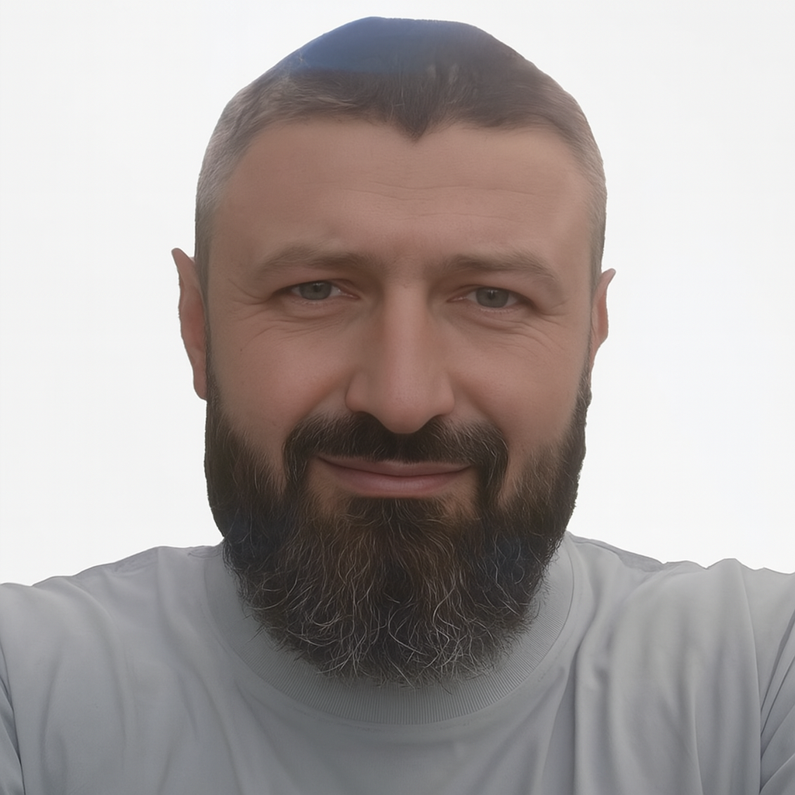

Деталі розшуку
ПІБ: Якімов Михайло Олексійович
Рік народження: 1980
Місце народження: м. Сніжне, Донецька область
Адреса проживання: м. Новоукраїнка, вул. Шевченка, 1
Сімейний стан: проживає з матір’ю-пенсіонеркою, сестрою Жадан Оксаною та її дітьми
Судимості: неодноразово засуджений, нещодавно звільнився з місць позбавлення волі
Залежності: з дитинства — таксикоманія, наркоманія; зловживає алкоголем
Соціальний статус: не працює, джерела доходу відсутні, перебуває на обліку в поліції
Характеристика громади: особа, яка вчинила новий умисний злочин після попереднього засудження
Повідомити інформацію (анкета)
Правова заява
Усі повідомлення обробляються відповідно до законодавства про захист персональних даних. Поширення неправдивої інформації тягне відповідальність.
Якщо у вас є великі обсяги даних (лог-файли, розпис транзакцій) — зверніться через захищені канали або особисто до відділення.